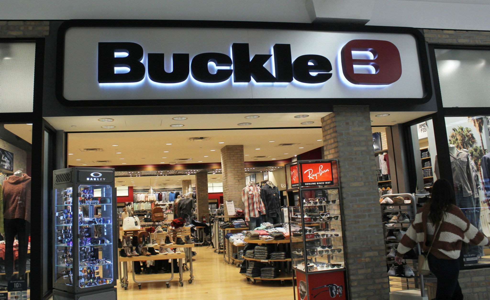
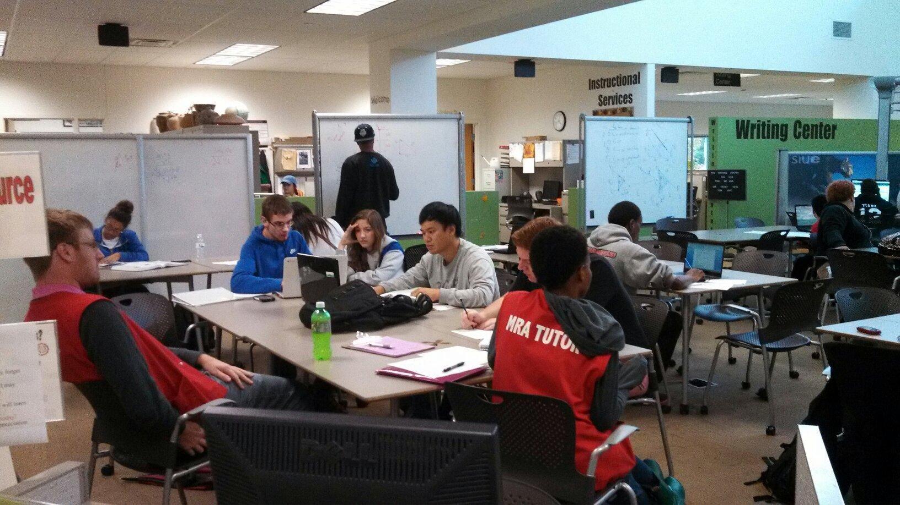
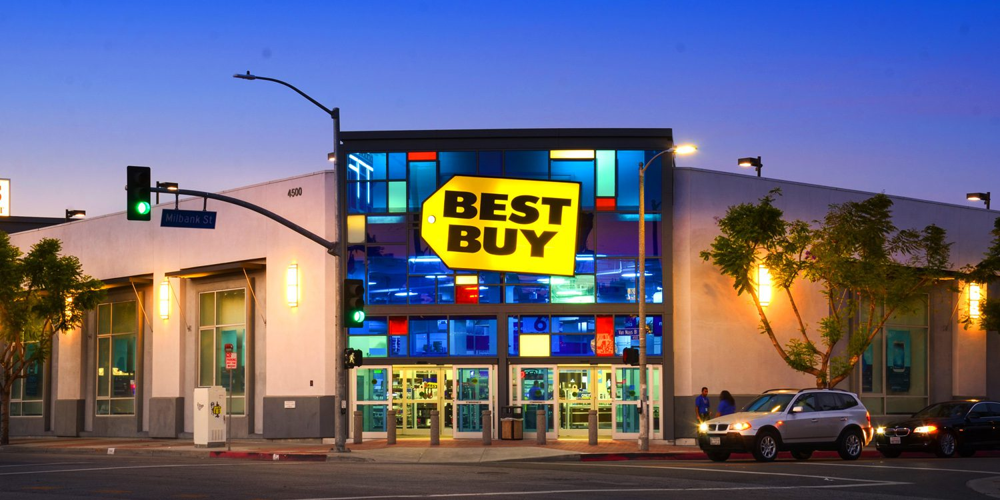

My Professional Career
Let's take a brief plunge into my employment history. Overtime I will come back to this project and continue to update accordingly! Bare with me as you watch this site change before your eyes!!
Buckle
My first actual job. I believe I was 18 years old. Did it for as long as I could. But then realized playing ball and working wasn't the best idea.
Express
My second job that didn't last long. Worked for 3 months because I enjoyed the extra money. Shortly after I was indirectly informed by my assistant coach that I could no longer work.
Work Study
This was my on campus job. After my collegiate basketball career I took on a work study position. Nice experience with working in an office setting and giving back time to students. Also was a great place to help minority students.
Best Buy
The beginning of the end. My first real job I guess you could say. I started working in the digital imaging department. This department also encompassed, mp3 media, gaming, and car audio. I became bored and made a move to a more serious position which was an autotech installer/technician. This position wasn't the average part time role. It demanded a certification through the CEA and lots of real time experience. I eventually succeeded to the Master Lead Technician role which is similar to an install bay manager. All the responsibility of a leader and all the work of a normal technician. After working in the position for 7 years, I then made a move to field/inhome work. This is my current position at Best Buy. I pretty much do any and everything regarding technology within the home or office.